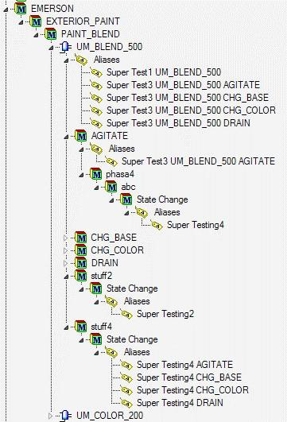

Tag template examples
Capture report events for phase modules
Tag template
Tag[1].Name =[Unit] [phasemodule] [Event, value="Report"]
Tag[1].Value =[Descript]:[Pval]:[EU]-[Event]_Just for testing
Tag[1].Type = string
Tag[1].unitalias=[phasemodule] Report
Tag[1].phasealias=Report
Tag[1].Annotation=[BatchID]
Incoming data
[BatchID]=Batch_123
[Time]=08/12/2008 13:00:05.123
[Descript]= Level
[Pval]=123.456
[EU]=cm
[Event]=Report
[Unit]=U101
[PhaseModule]=PDL123
Resulting PI point: U101 PDL123 Report
Resulting event added to PI point:
- Timestamp: 08/12/2008 13:00:05.123
- Value: Level:123.456:cm-Report_Just for Testing
- Annotation: Batch_123
The MDB module or PI AF asset for this phase module will have an alias that refers to this point.
Multiple triggers for same tag
Tag template
Tag[1].Name = [Unit] Tester
Tag[1].Value =[pval]-[Event]
Tag[1].Type = string
Tag[1].Trigger = [Event, value="Report"]
Tag[1].Trigger = [Event, value="State Change"]
Tag[1].Trigger = Comment
Tag[1].unitalias = Testing [Unit]
Tag[1].phasealias = Testing phase alias
Incoming data
Event 1:
[Time]=08/12/2008 13:00:05.123
[Event]=Report
[Unit]=U101
[Pval]=123.456
Event 2:
[Time]=08/12/2008 15:20:01.998
[Event]=State Change
[Unit]=U101
[Pval]=HOLDING
Event 3:
[Time]=08/12/2008 18:49:12.020
[Event]=Comment
[Unit]=U101
[Pval]=Discard Product
Resulting PI point: U101 Tester
Resulting event added to PI point
| TimeStamp | Value (string) |
|---|---|
| 08/12/2008 13:00:05.123 | 123.456-Report |
| 08/12/2008 15:20:01.998 | HOLDING-State Change |
| 08/12/2008 18:49:12.020 | Discard Product-Comment |
Recording start and stop events
The following tag templates store 1 when an operation or phase starts and 0 when it ends.
Tag[1].Name = Activity on [Unit] [Pval]
Tag[1].Value = 1
Tag[1].Type = integer
Tag[1].Trigger = [Descript, value="Step Activated"] [Event, value="Step Activity] [EU, value="Operation"]
Tag[1].Trigger = [Descript, value="Step Activated"] [Event, value="Step Activity] [EU, value="Phase"]
Tag[2].Name = Activity on [Unit] [Pval]
Tag[2].Value = 0 Tag[2].Type = integer
Tag[2].Trigger = [Descript, value="Step Deactivated"] [Event, value="Step Activity] [EU, value="Operation"]
Tag[2].Trigger = [Descript, value="Step Deactivated"] [Event, value="Step Activity] [EU, value="Phase"]
Tag aliasing
The following tag templates create tags corresponding to the aliases shown in the figure below.
Tag[1].Name = Super Test1 [Unit]
Tag[1].Value = [Event] | [Pval]
Tag[1].Trigger = [Event,value=State Change]
Tag[2].Name = Super Test2 [Unit]
Tag[2].Value = [Event] | [Pval]
Tag[2].Trigger = [Event,value=State Change]
Tag[2].UnitAlias = stuff2\[Event] | Super Testing2
Tag[3].Name = Super Test3 [Unit] [PhaseModule]
Tag[3].Value = [Event] | [Pval]
Tag[3].Trigger = [Event,value=State Change]
Tag[4].Name = Super Test4 [Unit] [PhaseModule]
Tag[4].Value = [Event] | [Pval]
Tag[4].Trigger = [Event,value=State Change]
Tag[4].UnitAlias = stuff4\[Event] | Super Testing4 [PhaseModule]
Tag[4].PhaseAlias = phasa4\abc\[Event] | Super Testing4
Tag[5].Name = Super Test5 [Unit] [PhaseModule]
Tag[5].Value = [Event] | [Pval]
Tag[5].Trigger = [Event,value=State Change] Tag[5].UnitAlias = NONE
Tag[5].PhaseAlias = NONE
Tag template example
